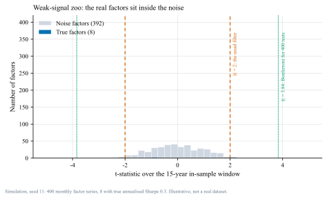
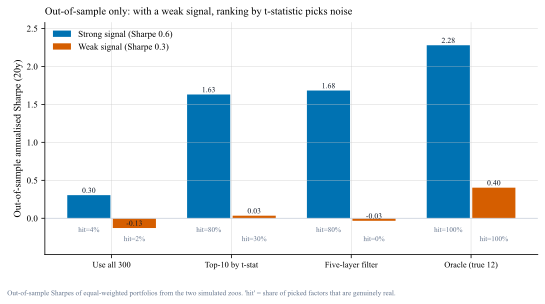
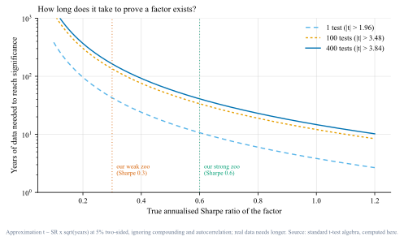

我把同一个「因子动物园」放进两档信噪比里跑了一遍：筛选的天花板由信噪比决定，不由方法决定。强信号下随便筛都对，弱信号下再多技巧也只是在噪声里挑噪声。 I ran the same factor zoo through two signal-to-noise regimes: the ceiling on screening is set by the signal, not by the technique.
本文实验是模拟：月度数据、alpha 恒定、噪声独立同分布，因此它只能说明"机制"，不能代表真实市场的具体数字。事实性陈述（因子数量、发表后衰减、复制失败率）来自第四节列出的文献，链接均已核对可打开（核对日期 2026-09-25）。 The experiment is a simulation (monthly data, constant alpha, i.i.d. noise): it demonstrates a mechanism, not real-world magnitudes. Factual claims come from the sources in section 8, each link verified on 2026-09-25.
做因子研究的人都会经历同一个瞬间：把 300 个候选因子丢进回测，按 t 值排序，取前 10 个，得到一个漂亮的夏普，然后拿它去讲一个故事。 Every factor researcher goes through the same moment: throw 300 candidates into a backtest, sort by t-statistic, keep the top ten, get a beautiful Sharpe, and tell a story about it.
问题在于：在同一份数据上挑选和评估，等于用同一张考卷出题又答题。挑选这一步本身就在消耗样本的信息量，而你最后看到的夏普里，混进了"挑"这个动作带来的运气。 The problem: selecting and evaluating on the same data is like writing and answering the same exam. The selection step consumes information from the sample, and the final Sharpe quietly includes the luck of having picked.
这篇想回答三个具体问题：弱的信号能被筛出来吗？强信号下筛选有没有价值？如果我必须给出一个数字，我该怎么算"我到底需要多少数据"？ Three concrete questions: can a weak signal be screened out at all; is screening even valuable when the signal is strong; and if I had to give a number, how much data would I need?
这不是我的新发现，学术界的结论比我狠得多。四组结果连起来是一条完整的证据链：[1][2][3][4][5] None of this is new: the academic results are harsher than my experiment. Four strands form one chain of evidence.[1][2][3][4][5]
| 结论Finding | 含义What it means | 来源Source |
|---|---|---|
| 因子数量爆炸，传统 t>2 门槛过低Factor proliferation; t>2 is too low | 候选越多，需要越高的显著性门槛；该文提出新的多重检验调整后门槛，量级明显高于 2More candidates require a higher bar; the paper proposes an adjusted threshold well above 2 | Harvey, Liu & Zhu[1] |
| 发表之后收益衰减Returns decay after publication | 样本外（发表后）收益平均约为样本内的一半，说明一部分"发现"来自数据挖掘而非真实定价错误Post-publication returns drop to roughly half of in-sample, evidence that part of the "discovery" was data mining | McLean & Pontiff[2] |
| 大规模复制的失败率很高Large-scale replication fails often | 在统一口径下重做大量异象，多数无法通过严格显著性检验；后续研究给出更乐观但同样苛刻的版本Re-running many anomalies under one protocol, most fail strict significance; later work is more constructive but equally demanding | Hou–Xue–Zhang；Jensen–Kelly–Pedersen[3][4] |
| 问题正在向其他资产蔓延The problem extends to other asset classes | 2026 年的新论文把"复制危机"搬到信用市场，并开始讨论因子之间共同定价的结构2026 papers move the replication question into credit markets and study co-pricing structure among factors | arXiv 2026[8][9] |
注：这些论文的结论不是"因子研究没用"，而是"筛选标准必须与候选数量匹配"。 Note: the conclusion is not that factor research is pointless, but that the screening bar must match the number of candidates.
为了看清机制，我造了两个"因子动物园"，每个因子都是月度收益序列，其中只有少数几个带真实的 alpha，其余全是噪声（带共同因子结构，所以因子之间有相关性簇）。样本内用来筛选，随后在未见过的样本外评估。[10] I built two simulated zoos of monthly factor series: a few carry genuine alpha, the rest are noise with a common-factor structure (so clusters exist). Selection happens in-sample; evaluation happens on unseen data.[10]

tools/make_figs_factor.py 可复现）。
真因子的 t 值区间是 0.23 ~ 2.20，而噪声因子的最大 |t| 达到 2.89——也就是说，没有任何一个真因子能达到"看起来显著"的位置，反而有噪声比真信号更显著。Bonferroni 门槛（400 次检验）是 |t| > 3.84，两边都过不了。
Real factors span t = 0.23–2.20, while the largest noise |t| reaches 2.89: no real factor looks significant, and some noise looks better than the truth. The Bonferroni bar for 400 tests is |t| > 3.84 — neither side clears it.接下来看四种做法在同一份模拟里的表现：全选、按 t 值取前 10（最常见的偷懒法）、五层过滤（下面第四节详述）、以及"上帝视角"（只用真因子，现实中不存在，作为上限参照）。 Four approaches, same simulated data: use everything, top-10 by t-statistic, a five-layer filter (section 4), and an oracle that keeps only the true factors as an upper bound.

强信号档的对照很关键：300 个候选、12 个真、夏普 0.6 时，朴素筛选和五层过滤几乎一样（样本外 1.63 vs 1.68，命中率都是 80%）。结论：方法的价值只在弱信号区显现，而真实世界恰恰是弱信号区。如果你只能用强信号的历史案例来证明流程有效，那你其实什么都没证明。 In the strong regime the naive and layered rules are indistinguishable (1.63 vs 1.68, both 80% hit). The method only matters in the weak regime — which is where real research lives. A process demonstrated only on strong-signal history demonstrates nothing.
多重检验的代价可以算出来。用 t 统计量与年化夏普之间的近似关系 t ≈ SR × √年数，反解就得到"达到显著所需要的年数" = (t 门槛 / SR)²。 The cost is computable. Using the approximation t ≈ SR × √years, the data needed is (threshold / SR)².

实验跑完，我把自己的流程改成下面五条。它不是"更好的筛子"，而是承认单因子检验的能力上限之后的替代做法。 Five changes to my own workflow. Not a better sieve — a response to the limits of single-factor testing.
我认为"因子筛选"这个词误导了很多人：它听起来像是从沙子里挑金子，但大多数时候我们面对的是一堆看起来都像金子的沙子。实验里弱信号档的五层过滤选出 4 个因子、命中 0 个——这不是因为流程写得差，而是因为在那个信噪比下，任何流程都做不到。 "Factor screening" misleads: it sounds like picking gold from sand, when usually the sand all glitters. In the weak regime the layered filter picked four factors and none were real — not because the process was sloppy, but because at that signal-to-noise nothing would work.
所以我把研究目标从"证明某个因子存在"改成"我的决策有多依赖这个结论"。后者可以回答，前者往往不能。面试里我更愿意说：这个信号我测过，样本量对应到图 3 大约是 40 年，我手上只有 15 年，所以我只给它小仓位——而不是说它夏普 1.95。 So my research question changed from "does this factor exist" to "how much does my decision depend on it". The first is usually unanswerable; the second is answerable — and is what I would say in an interview, rather than quoting a Sharpe of 1.95.
tools/make_figs_factor.py（固定随机种子，可完全复现；模拟设定见第三节）。I simulated two factor zoos to separate the effect of the screening method from the effect of the signal itself. In the strong regime — 300 candidates, 12 real factors, annualised Sharpe 0.6 over twenty years — a naive top-ten-by-t-statistic screen and a stricter five-layer filter performed almost identically out of sample, 1.63 versus 1.68, with the same 80% hit rate. Methods look clever when the signal is strong.
In the weak regime — 400 candidates, eight real factors, Sharpe 0.3 over fifteen years — the top ten by t-statistic produced an in-sample Sharpe of 1.95 and an out-of-sample Sharpe of 0.03, with only 30% of the picks being real. The stricter filter did worse: four picks, none real. No true factor even reached |t| = 2.89, while some noise factors did. The Bonferroni bar for 400 tests was |t| > 3.84, and nothing on either side cleared it.
That leads to an arithmetic I now use in practice: with t ≈ SR × √years, proving a Sharpe-0.3 factor against 400 tests would need roughly 164 years of data, and even a single test about 43 years. So I stopped asking whether a factor exists and started asking how much my decision depends on it — marginal contribution at portfolio level, shrinkage instead of keep-or-drop, and an honest "I cannot prove this" when the sample is simply too short.
Aylon (2026). 因子筛选：为什么样本内 1.95 的漂亮结果，样本外会归零. Notes, v1.0. https://aayloo.github.io/notes/factor-screening/
| 版本Version | 日期Date | 改动Change |
|---|---|---|
| v1.0 | 2026-09-25 | 初版。两档信噪比模拟 + 11 条来源（链接已核查）。 First version: two-regime simulation and eleven verified sources. |